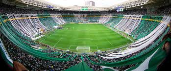

Sobre o Palmeiras
O Palestra Itália foi fundado em 26 de agosto de 1914 por imigrantes italianos em São Paulo, inspirado nos clubes Pro Vercelli e Torino. A fundação aconteceu após duas reuniões no Salão Alhambra, e seu primeiro presidente foi Ezequiel Simone. Inicialmente, o clube tinha finalidades sociais e esportivas, com a maioria dos fundadores trabalhando nas Indústrias Matarazzo. O clube realizou seu primeiro jogo em janeiro de 1915, vencendo o Savoia por 2 a 0. Em 1916, estreou no Campeonato Paulista após apoiar a APEA com a ajuda da Matarazzo. Em 1920, comprou o Parque Antarctica e, no mesmo ano, conquistou seu primeiro título paulista. Na década de 1920, destacou-se com campanhas invictas e conquistas importantes, inclusive internacionais. Na década de 1930, com o profissionalismo no futebol, o Palestra viveu seu auge: venceu o Paulista de 1932 de forma invicta, conquistou o bicampeonato em 1933, além do Torneio Rio–São Paulo, e goleou o Corinthians por 8 a 0, na maior derrota da história do rival. Com a Segunda Guerra Mundial, o Brasil rompeu relações com os países do Eixo, forçando o clube a mudar seu nome. Após tentativas de adaptação, em 14 de setembro de 1942, passou a se chamar Sociedade Esportiva Palmeiras, mantendo o "P" e as cores verde e branca. A estreia com o novo nome foi marcada pela Arrancada Heroica, vencendo o São Paulo por 3 a 1 e conquistando o título paulista. A partir de 1943, o Palmeiras entrou em uma nova fase de glórias. Conquistou títulos importantes em 1944, 1947 e 1950 (o "Jogo da Lama"), e fez sua primeira excursão europeia em 1949, consolidando-se como uma das maiores forças do futebol brasileiro.
O Verdão tem uma história repleta de títulos e uma torcida apaixonada que lota seus estádios.
Títulos Importantes
- 12x Campeão Brasileiro (1960, 1967, 1967, 1969, 1972, 1973, 1993, 1994, 2016, 2018, 2022, 2023)
- Copa do Brasil: 4 títulos (1998, 2012, 2015, 2020)
- Supercopa do Brasil: 1 título (2023)
- Recopa Sul-Americana: 1 título (2022)
- Copa Libertadores da América: 3 títulos (1999, 2020, 2021)
- Copa dos Campeões: 1 título (2000)
- Campeonato Paulista: 26 títulos
- Torneio Rio – São Paulo: 5 títulos
- Copa Rio: 1 título (1951)
- Copa Mercosul: 1 título (1998)
Últimas Notícias
Galeria

Elenco 2025
Goleiros
| Nome | POS | Idade | Alt | P | NAC | J | SUB | D | GS | A | FC | FS | CA | CV |
|---|---|---|---|---|---|---|---|---|---|---|---|---|---|---|
| Marcelo Lomba | G | 38 | 1.88 m | 83 kg | Brasil | 1 | 0 | 4 | 2 | 0 | 0 | 0 | 0 | 0 |
| Weverton | G | 37 | 1.88 m | 91 kg | Brasil | 15 | 0 | 29 | 12 | 0 | 0 | 6 | 2 | 0 |
| Aranha | G | 20 | — | — | Brasil | 0 | 0 | 0 | 0 | 0 | 0 | 0 | 0 | 0 |
Jogadores de Campo
| Nome | POS | Idade | Alt | P | NAC | J | SUB | G | A | TC | CG | FC | FS | CA | CV |
|---|---|---|---|---|---|---|---|---|---|---|---|---|---|---|---|
| Marcos Rocha | D | 36 | 1.75 m | 73 kg | Brasil | 1 | 0 | 0 | 0 | 1 | 1 | 2 | 1 | 0 | 0 |
| Bruno Fuchs | D | 25 | 1.88 m | 82 kg | Brasil | 8 | 1 | 1 | 0 | 7 | 4 | 7 | 4 | 0 | 0 |
| Luan | D | 30 | 1.88 m | 84 kg | Brasil | 6 | 2 | 0 | 0 | 2 | 2 | 6 | 3 | 0 | 0 |
| Gustavo Gómez | D | 31 | 1.85 m | 86 kg | Paraguai | 13 | 0 | 1 | 0 | 7 | 3 | 15 | 7 | 3 | 0 |
| Murilo | D | 27 | 1.88 m | 82 kg | Brasil | 10 | 1 | 0 | 0 | 4 | 2 | 6 | 7 | 1 | 0 |
| Vanderlan | D | 21 | 1.83 m | 79 kg | Brasil | 8 | 3 | 0 | 0 | 3 | 1 | 3 | 1 | 1 | 0 |
| Piquerez | D | 25 | 1.83 m | 79 kg | Uruguai | 13 | 1 | 1 | 0 | 11 | 5 | 9 | 10 | 2 | 0 |
| Mayke | D | 32 | 1.78 m | 73 kg | Brasil | 9 | 3 | 0 | 0 | 6 | 4 | 6 | 6 | 1 | 0 |
| García | D | 22 | 1.75 m | 69 kg | Brasil | 5 | 2 | 0 | 0 | 3 | 1 | 2 | 3 | 0 | 0 |
| Rômulo | M | 22 | 1.78 m | 73 kg | Brasil | 10 | 3 | 0 | 0 | 4 | 1 | 5 | 8 | 1 | 0 |
| Aníbal Moreno | M | 25 | 1.78 m | 76 kg | Argentina | 15 | 0 | 0 | 0 | 5 | 1 | 12 | 13 | 2 | 0 |
| Richard Ríos | M | 24 | 1.78 m | 78 kg | Colômbia | 14 | 1 | 1 | 0 | 3 | 0 | 10 | 10 | 2 | 0 |
| Jailson | M | 25 | 1.74 m | 70 kg | Brasil | 7 | 0 | 0 | 0 | 1 | 0 | 5 | 8 | 0 | 0 |
| Raphael Veiga | M | 29 | 1.78 m | 72 kg | Brasil | 19 | 4 | 7 | 3 | 8 | 5 | 22 | 14 | 4 | 0 |
| Gustavo Scarpa | M | 29 | 1.77 m | 72 kg | Brasil | 12 | 4 | 3 | 2 | 3 | 2 | 16 | 19 | 3 | 0 |
| Endrick | A | 17 | 1.78 m | 70 kg | Brasil | 18 | 6 | 12 | 2 | 8 | 6 | 20 | 18 | 4 | 0 |
| Vitor Roque | A | 19 | 1.75 m | 68 kg | Brasil | 16 | 2 | 8 | 1 | 6 | 2 | 18 | 14 | 2 | 0 |
| Deyverson | A | 31 | 1.81 m | 75 kg | Brasil | 10 | 3 | 2 | 1 | 6 | 4 | 12 | 10 | 1 | 0 |
| Rony | A | 30 | 1.73 m | 71 kg | Brasil | 20 | 3 | 8 | 2 | 9 | 3 | 16 | 12 | 4 | 0 |
| Gustavo Scarpa | M | 29 | 1.77 m | 72 kg | Brasil | 12 | 4 | 3 | 2 | 3 | 2 | 16 | 19 | 3 | 0 |
Estádio Allianz Parque
O Allianz Parque, também conhecido como Palestra Itália, é a casa do Palmeiras desde 2014. Localizado em São Paulo, é um estádio moderno com capacidade para mais de 43 mil torcedores, oferecendo conforto e ótima infraestrutura para jogos e eventos.